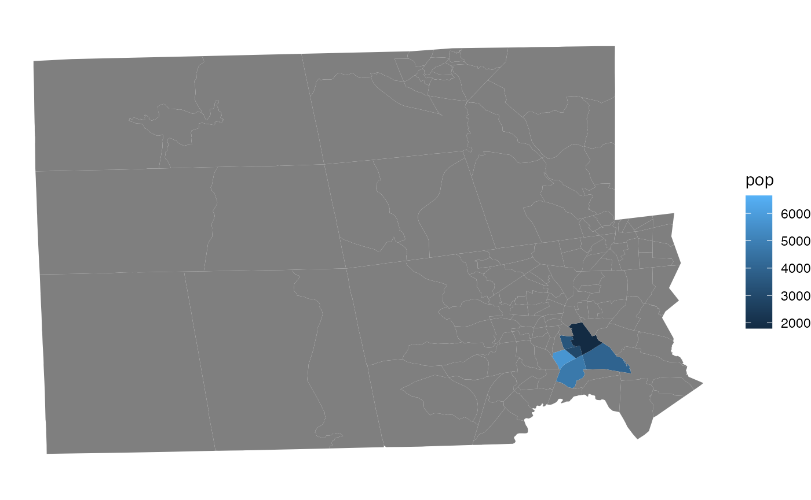

The US Census Bureau releases redistricting data (P.L. 94-171) following the decennial census. This article walks through the basics of reading that data and getting it into working form.
The redistricting data mandated by P.L. 94-171 is composed of six tables, five of population characteristics, and one of housing characteristics. In the legacy data format, these six tables (and dozens of levels of geography) are split into four files: File01, File02, File03, and the Geographic Header Record. Files 01–03 have the actual decennial census data for each table, while the geographic header has geographic identifiers (FIPS code, precinct IDs, etc.) and information (area, water, etc.).
P.L. 94-171 file layout
These four files have the same rows, each of which is identified by a LOGRECNO number. Combining the columns shared across the four files yields the full P.L. 94-171 file
The basic unit of Census geography is the block; all other geographies are constructed from them. But the P.L. 94-171 file is not composed of blocks alone. The Census has already tabulated the six table statistics across every possible level of geographies. To get information for a single geography level—blocks, or counties, or school districts—one needs only to subset to the rows which correspond to this geographic level (coded in the SUMLEV column).
So the basic process for working with legacy P.L. 94-171 data is:
pl_read(), pl_url())pl_subset(); geography level codes listed in pl_geog_levels)pl_select_standard())tigris shapefile.The utility function pl_tidy_shp() combines all of these steps into one function for most common use case of tabulating basic redistricting information at the block level. This is demonstrated in the README
PL94171 package
The four components of the P.L. 94-171 file should be downloaded into their own directory. Here, we’ll use the example data included in the package, from the 2018 end-to-end Census test in Providence County, Rhode Island, and read it into our R session. In general, you can provide a URL in place of a file path, and the package will read the data from the URL. The pl_url() function will automatically construct the URL to the data for a given state and year.
# `extdata/ri2018_2020Style.pl` is a directory with the four P.L. 94-171 files
path <- system.file("extdata/ri2018_2020Style.pl", package = "PL94171")
pl_raw <- pl_read(path)
# try `pl_read(pl_url("RI", 2010))`This creates a large list where each individual P.L. 94-171 file component is a separate entry in the list. If we look at the top of one of these entries, we see the same structure as in the schematic above: each redistricting variable is a column, the rows are indexed by LOGRECNO, and various levels of aggregation are all included as different sets of rows in the same table (notice the countywide population counts in the first two rows).
head(pl_raw$`00003`)
#> # A tibble: 6 × 15
#> FILEID STUSAB CHARITER CIFSN LOGRECNO P0050001 P0050002 P0050003 P0050004
#> <chr> <chr> <chr> <chr> <int> <int> <int> <int> <int>
#> 1 PLST RI 000 03 1 15766 7311 3266 261
#> 2 PLST RI 000 03 2 15766 7311 3266 261
#> 3 PLST RI 000 03 19 732 0 0 0
#> 4 PLST RI 000 03 20 0 0 0 0
#> 5 PLST RI 000 03 21 1 0 0 0
#> 6 PLST RI 000 03 22 1 1 0 0
#> # … with 6 more variables: P0050005 <int>, P0050006 <int>, P0050007 <int>,
#> # P0050008 <int>, P0050009 <int>, P0050010 <int>To subset to a desired geography level, we must first identify the corresponding SUMLEV code.
print(pl_geog_levels)
#> # A tibble: 85 × 2
#> SUMLEV SUMLEV_description
#> <chr> <chr>
#> 1 040 State
#> 2 050 State-County
#> 3 060 State-County-County Subdivision
#> 4 067 State-County-County Subdivision-Subminor Civil Division
#> 5 140 State-County-Census Tract
#> 6 150 State-County-Census Tract-Block Group
#> 7 155 State-Place-County
#> 8 160 State-Place
#> 9 170 State-Consolidated City
#> 10 172 State-Consolidated City-Place within Consolidated City
#> # … with 75 more rowsHere, we’ll look at Census tracts, which are SUMLEV=140.
We see that all four components have been combined into one large table, with data for each of the seven Census tracts in the example file recorded in a single row. To extract commonly-used variables from the 397 columns, we can run the following:
pl <- pl_select_standard(pl, clean_names = TRUE)
print(pl)
#> # A tibble: 7 × 24
#> GEOID state county row_id summary_level vtd pop pop_hisp pop_white
#> <chr> <chr> <chr> <int> <chr> <chr> <int> <int> <int>
#> 1 44007000101 RI 007 19 140 NA 3970 1442 1445
#> 2 44007000102 RI 007 20 140 NA 4735 2555 815
#> 3 44007000200 RI 007 21 140 NA 5703 3766 570
#> 4 44007000300 RI 007 22 140 NA 6647 3827 754
#> 5 44007000400 RI 007 23 140 NA 3433 2130 142
#> 6 44007000500 RI 007 24 140 NA 2940 2249 39
#> 7 44007000600 RI 007 25 140 NA 1797 778 170
#> # … with 15 more variables: pop_black <int>, pop_aian <int>, pop_asian <int>,
#> # pop_nhpi <int>, pop_other <int>, pop_two <int>, vap <int>, vap_hisp <int>,
#> # vap_white <int>, vap_black <int>, vap_aian <int>, vap_asian <int>,
#> # vap_nhpi <int>, vap_other <int>, vap_two <int>Above, we set clean_names = TRUE, which is the default. This creates a set of variables familiar to the redist family of packages.
To combine these data with a shapefile, we must use the tigris package. The GEOID column is shared between the P.L. 94-171 data and the TIGER shapefiles from tigris.
library(tigris)
library(sf)
library(dplyr)
library(ggplot2)
ri_tracts = tracts("RI", county="Providence", year=2020, progress_bar=FALSE)
full_join(pl, ri_tracts, by="GEOID") %>%
ggplot(aes(fill=pop, geometry=geometry)) +
geom_sf(size=0) +
theme_void()